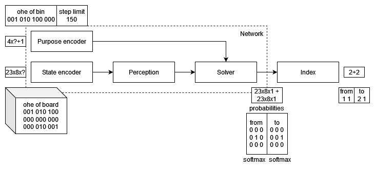
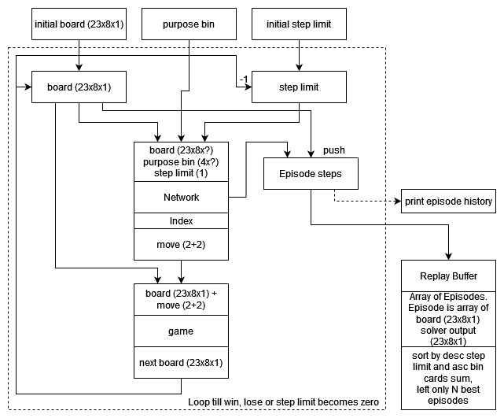
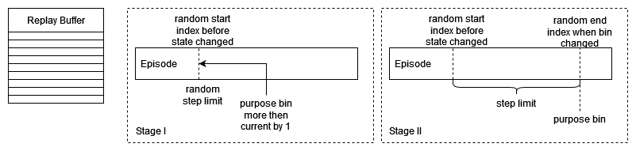

Решатель карточных игр «Солитер» при использовании tensorflow.js
Зарегистрированы несколько глобальных объектов.
Все данные о модели, данных и процесса обучения можно увидеть на панели логов.
Переключите бэкенд, если необходимо. Сейчас используется
Схема обучения
Нейронная сеть (рис.1) состоит из нескольких блоков. Состояние расклада хранится в двухмерном массиве строк. Перед отправкой в нейронную сеть строки преобразуются в one hot encoding вектор.
Выходом нейронной сети является 2 маски вероятностей, показывающие какую карту взять и куда перенести.

Перед очередной эпохой тренировки необходимо заполнить буфер повторов (рис.2). В нем хранится каждая сыгранная игра. Но сохраняются только N лучших игр.

Когда буфер повторов заполнен подготавливаем данные для обучения.
На первой стадии сеть еще не знает правила игры и делает как валидные действия, так и невалидные действия не ведущие в изменению состояния игры. Поэтому какое-то время данные для обучения берутся по схеме рис.3 (Stage I).
Когда сеть увереннее начинает выбирать валидные действия есть больше вероятности, что часть карт будет попадать в корзину. А значит для выбора тренировочных данных можно воспользоваться схемой рис.3 (Stage II)

Схема использования
Загрузка модели
Выберите 2 файла модели. JSON-файл с описанием структуры модели. И бинарный файл весов. Затем нажмите кнопку загрузки.
Тренировка модели
Чтобы натренировать модель, нажмите кнопку ниже.
Прогресс тренировки: 0 of 10
Использование модели
Опишите позицию на поле и нажмите кнопку расчета. Модель выдаст последовательность перемещения карт для решения карточного расклада.
c - Черви ♥, p - Пики ♠, k - Крести ♣, b - Бубны ♦
Скачивание модели
Будет скачено 2 файла: JSON-файл с описанием структуры модели и бинарный файл весов.